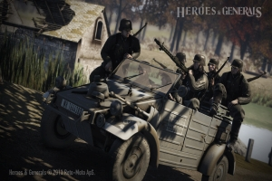
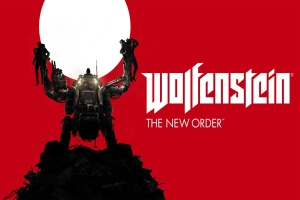
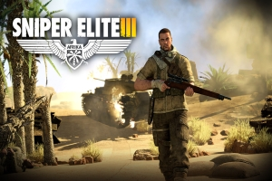
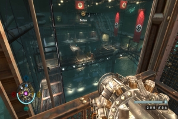
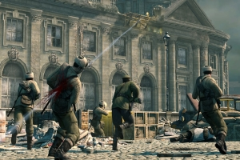
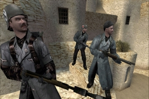

Home
Games
Over deze site
Suggesties
World War II Games

Heroes and generals
Heroes & Generals is een F2P MOFPS met een strategische multiplayer-campaign, Gezet in het midden van de Tweede Wereldoorlog ...

Wolfenstein : The New Order
Europa, 1946. De Tweede Wereldoorlog is woedt in Europa. Waar eens de geallieerden het voordeel hadden, Draaiden de nazi's het tij om ...

Sniper Elite 3
Het nieuwste hoofdstuk in de bekroonde serie, SNIPER ELITE 3 neemt spelers aan de meedogenloze nog exotische terrein van Noord-Afrika in een woeste strijd tegen ...

Wolfenstein
Het speelt zich af in het fictieve stadje "Isenstadt" tijdens de Tweede Wereldoorlog, waar de nazi's de macht hebben gegrepen om de zeldzame ...

Sniper Elite V2
In de donkere dagen van het einde van de Tweede Wereldoorlog te midden van de ruïnes van Berlijn, kan een kogel de geschiedenis veranderen ...

Wolfenstein: Enemy Territory
Wolfenstein: Enemy Territory is een gratis en open source multiplayer first-person shooter tijdens de Tweede wereldoorlog ...
Meer games